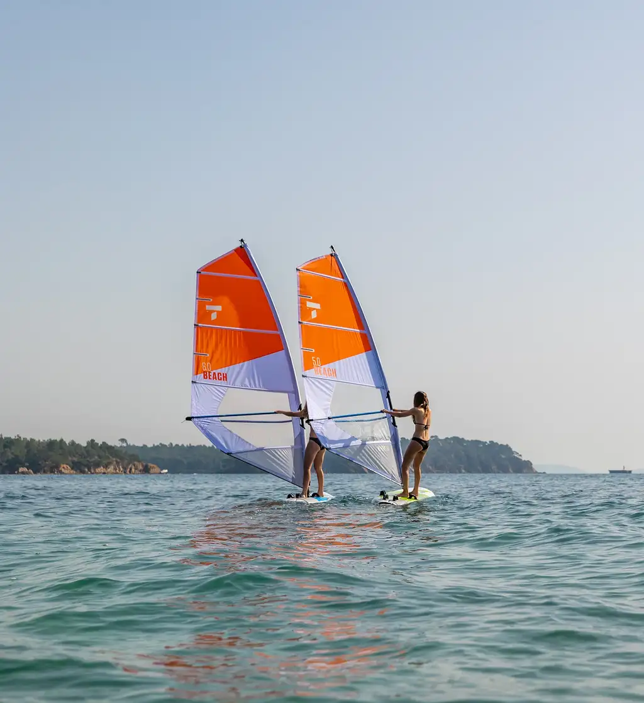

Windsurfing 101
Intro to Windsurfing

As expert windsurfers, we really have to think back to remember a time when we weren't familiar with every in and out of our favorite sport. But we get that not everyone is an expert. Many people are still learning about windsurfing, so we’ve created this handy guide to teach you the basics. What is Windsurfing?Some people may think that traditional surfing and windsurfing are similar. They both happen on the water with a board, but that is where the similarities end. Think of windsurfing as riding your own mini sailboat! With regular surfing, you are using the speed of the wave to move you, but with windsurfing, you are using the wind in the sail — which gives you a lot more freedom. People also often confuse kiteboarding, or kitesurfing, and windsurfing. With windsurfing, the sail is attached to the board, whereas with kitesurfing the sail is a kite high above you. There are several different styles of windsurfing for all kinds of fun:
Can anyone windsurf?Windsurfing is a great sport for people of all ages. The only requirements are that you be comfortable in the water, able to get from a sitting or kneeling position to standing and that you want to learn to windsurf. Practice and patience are all that is really required. Windsurfing is a balance and technique sport much more than a strength sport. Being strong doesn’t hurt — but isn’t required! What are the best windsurfing conditions?That all depends on what kind of windsurfing you are doing and what kind of equipment you have. You need some wind to make windsurfing happen, at least 5 mph or so. Beginners will want wind speeds of 5-10 mph, but more advanced windsurfers get excited when they see a weather forecast that includes "small craft warning". We will dive into the basic equipment in a future blog, so keep an eye out for that! Make windsurfing your new favorite sportWindsurfing looks thrilling and intense. Don’t let the tricks scare you; let them motivate you! While beginners won’t be able to do a forward loop on their first ride, a good foundation will push you in the right direction to be able to do tricks or glide around the bay with ease. Windsurfing can have a reasonably high initial cost, so a good tip is to begin with lessons with included equipment. This way you can get a taste for what windsurfing offers — minus a big financial commitment. Whether in a group or one-on-one session, we will provide you with a strong foundation to have you windsurfing on your own by the end of your first lesson. |
#5